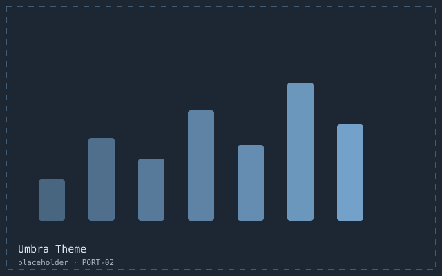
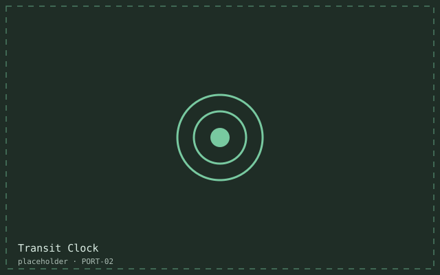

About
I started in 2015 as the apprentice who was given the footer. Ten years later I work at the seam between design systems and the browser: component APIs, keyboard models, focus specifications, and the unglamorous work of making 240 screens behave the same way.
Most of what I am proud of is invisible. A tab order that matches the page. A form that tells you what went wrong before you submit it. A theme whose contrast was measured rather than eyeballed. When I build for myself it tends to be small and strange — a tab editor, a departures board, an editor theme — but the constraints are the same.
Status right now: loading… · open to senior frontend or design-engineering work.
Open to a senior frontend or design-engineering role
Boston or remote in US Eastern time. I read every message myself.
- Notice
- 6 weeks
- Interests
- Design systems, accessibility, tooling
- Local time
- loading…
- Right now
- loading…
Experience
-
2024 — present
Senior frontend engineer, accessibility · Keelpoint
Own the component library behind six product teams: 74 components, one keyboard model, one focus specification. Cut the scheduling view's time to interactive from 3.1s to 0.9s, mostly by deleting code.
- TypeScript
- CSS
- Design systems
- WCAG 2.2
-
2021 — 2024
Frontend engineer · Tidemark
Rebuilt checkout and the internal editor used by 400 staff. Any action reachable in three keystrokes, and none that needed a mouse. Wrote the component documentation that is still the onboarding path.
- React
- TypeScript
- Storybook
- Testing
-
2019 — 2021
Frontend developer · Lumen & Co
Editorial templates for a newsroom: 1.9 MB per page down to 240 KB, which halved bounce on mobile connections.
- HTML
- CSS
- Eleventy
- Performance
-
2018 — 2019
Web developer · Scoutline Studio
Agency case-study engine and a dozen client sites. Introduced the studio's first accessibility checklist after a launch failed in front of a client.
- PHP
- CSS
- jQuery
-
2017 — 2018
Junior developer · Fieldhouse
Scoreboards, schedules and the occasional SVG mascot. Learned to test on the worst device in the building.
- JavaScript
- SVG
-
2015 — 2017
Developer apprentice · Brightwall
Campaign microsites, and the review culture that taught me to write semantic HTML before anything else.
- HTML
- CSS
- jQuery
Projects
-

Fretboard
A guitar-tab editor that plays what you write. Runs offline, weighs 48 KB, and every control is reachable from the keyboard.
202611k monthly players
- TypeScript
- Canvas
- Web Audio
-

Umbra Theme
An editor theme built contrast-first: every token pair measured against its background, in a dark and a light variant.
2025124k installs
- TextMate grammars
- JSON
- WCAG
-

Transit Clock
A departures board for a hallway screen, legible at four metres, that announces changes politely instead of flashing them.
20259 stations
- Web Components
- SVG
- ARIA live
-

ramanbuilds.example v4
This site: one stylesheet, one script, no build step, and a performance budget written into the README.
20240 dependencies
- HTML
- CSS
- Vanilla JS
Writing
- Sep 2026
Tab order is a product decision
Nobody signs off on tab order, so it gets decided by the order someone happened to write the divs in.
- Jun 2026
Shipping an editor theme contrast-first
I measured every token pair before picking a single hue. The theme got prettier, not uglier, which surprised me.
- Mar 2026
Performance budgets beat opinions
A number in CI ends an argument that three senior engineers could not finish in two weeks.
Contact
The quickest way to reach me is email: priya@ramanbuilds.example. I answer everything within a working day, and I will say plainly if something is not a fit.